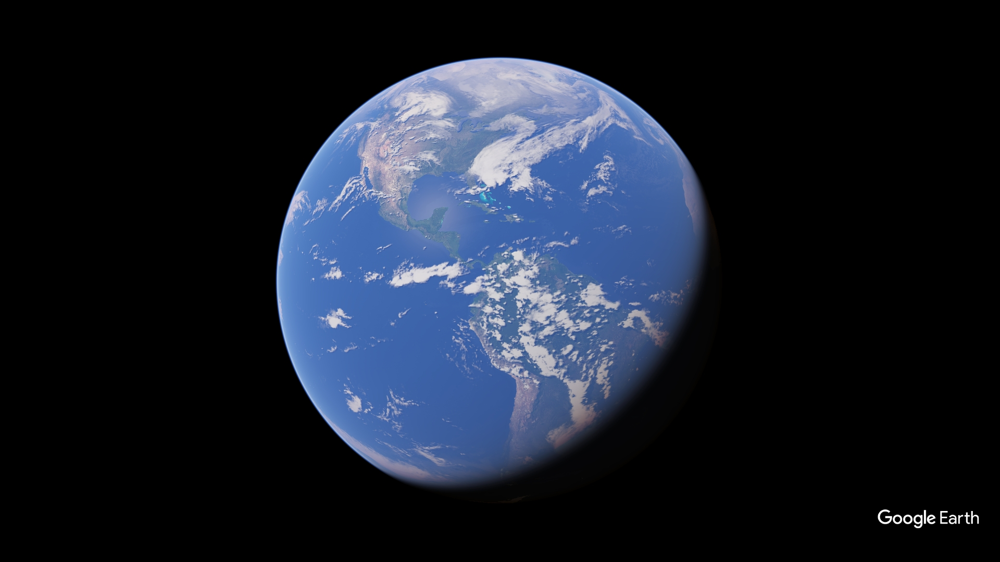

El censo inmobiliario de Bogotá registra 2,81 millones de predios en las 20 localidades. El avalúo catastral total para 2026 alcanza los $938 billones de pesos — un incremento del 93 % frente a 2016, evidenciando la revalorización acelerada del suelo bogotano.